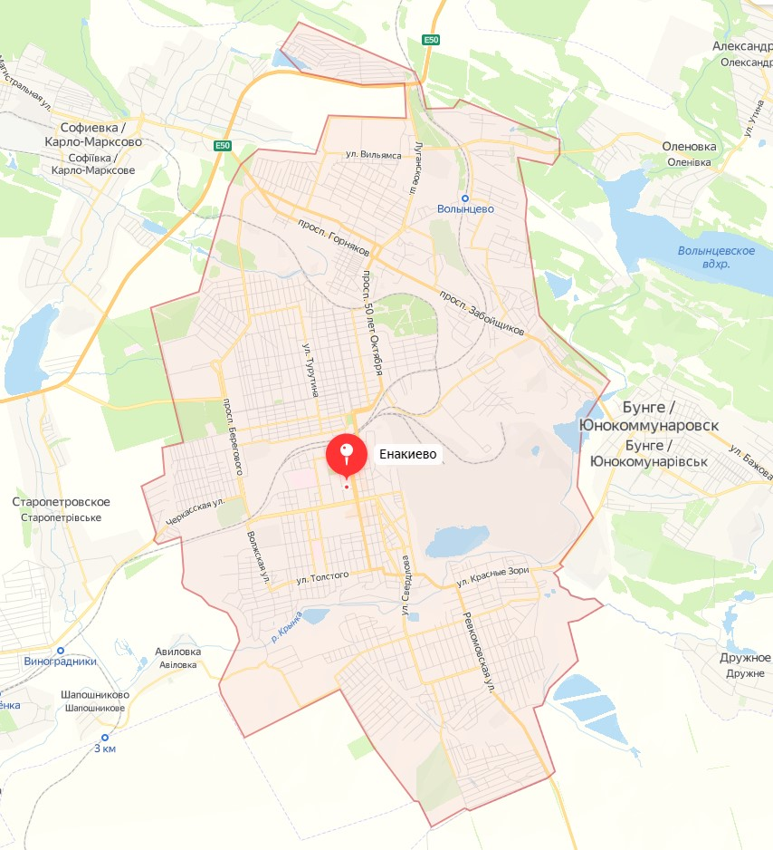

География
Город расположен в восточной части Донецкой области, расстояние до Донецка 50 км. В его южных окрестностях реки Садки, Корсунь и Булавин сливаются в реку Крынку (бассейн Миуса).
Соседние населённые пункты по сторонам света
- С, СЗ: город Горловка
- СЗ: Новосёловка (Енакиевский горсовет), Карло-Марксово
- СВ: Оленовка (выше по течению Булавина), Александровское, Каютино, город Углегорск
- З: Старопетровское, Корсунь
- В: город Юнокоммунаровск, Славное, Дружное
- ЮВ: Шевченко (Розовский сельсовет)
- ЮЗ: Авиловка, Шапошниково, Щебёнка (все три ниже по течению Булавина); Шевченко (Енакиевский горсовет), Верхняя Крынка (Енакиевский горсовет), Верхняя Крынка (Макеевский горсовет), Новосёловка (Макеевский горсовет), Новомарьевка, Новомосковское
- Ю: Розовка, город Ждановка
Карта города
Административное деление
Подчинены города Юнокоммунаровск и Углегорск, 8 посёлков городского типа, 8 сёл и 11 посёлков. Подробнее — Енакиевский городской совет.
Также до 11 декабря 2014 года был подчинён город Углегорск.
Районы и части города
- Юнокоммунаровск (Юнком),
- Углегорск,
- Блочок (Площадь Бурмистрова, бывшая «Площадь Дружбы»)
- Первомайка,
- Раздоловка,
- Красный городок,
- Зарудня,
- посёлок ДСК
- посёлок 1905 года,
- посёлок 40-летия ВЛКСМ,
- Енакиевский посёлок,
- Ватутинский посёлок,
- Криничка,
- Гапуровка,
- посёлок шахты «Красный Октябрь»,
- посёлок шахты «Красный Профинтерн»,
- посёлок Северный,
- посёлок Стандартный,
- посёлок Нехотеевка,
- посёлок Лесной
- посёлок Постышева
- посёлок Карло-Марксово
- посёлок Казачий
- посёлок Фильтровальная
Микрорайоны:
- Парковый
- им. Ватутина
- Горизонт
- № 15, Горняк
- № 16, им. Брайляна
- Городской
Автобусы Енакиево
| N | Маршрут | Расписание |
|---|---|---|
| 1 | Город - пос. Ватутино | с до , каждые , 18 р. |
| 1а | Город - пос. Ватутино | с до , каждые , 18 р. |
| 2 | Город - пос. Ватутино | с до , каждые -, 18 р. |
| 3 | Город – пос. 40-летия Октября | с до , каждые , 18 р. |
| 4 | Гор. больница № 7 – ст. Волынцево | с до , каждые , 18 р. |
| 5 | Город - пос.1905 года | с до , каждые -, 18 р. |
| 8 | Город - ДСК | с до , каждые -, 18 р. |
| 9 | Город - пос. Стандартный | с до , каждые , 18 р. |
| 10 | Город - мкр. Горняк | с до , каждые , 18 р. |
| 10а | мкр. Горняк - Горбольница №1 | с до , каждые , 18 р. |
| 11 | пос. Ватутина - мкр. Горняк | с до , каждые , 18 р. |
| 15 | Город - пос. Красный городок | с до , каждые -, 18 р. |
| 20 | пос. Красный городок - пос. Ватутина | с до , каждые , 18 р. |
| 21 | Углегорск - Енакиево | с до , каждые -, 20 р. |
| 22 | Дебальцево - Енакиево | с до , каждые -, 30 р. |
| 23 | Енакиево - пгт. Булавинское | с до , каждые -, 18 р. |
| 24 | Енакиево - пгт. Ольховатка | с до , 2 автобуса, 18 р. |
| 25 | ул. Баратынского - Город | с до , каждые -, 18-20 р. |
| 26 | Кировское - Енакиево | с до , каждые , 18-20 р. |
| 27 | Енакиево - Макеевка | с до , каждые -, 50 р. |
| 28 | Енакиева - пгт. Корсунь | с до , 2 автобуса, ~ р. |
| 29 | Енакиево - г. Юнокоммунаровск | с до , каждые -, 20 р. |
| 30 | Енакиево – пгт. Карло-Марксово | с до , каждые -, 18-26 р. |
| 34 | Енакиево - шахта Карла-Маркса | с до , каждые -, 20 р. |
| 36 | г. Юнокоммунаровск - пгт. Дружное | с до , каждые -, 18 р. |
| 80 | Енакиево - Горловка | с до , каждые -, 18 р. |
| Енакиево - Донецк | Енакиево - Донецк | - |
| Дебальцево - Донецк | Дебальцево - Донецк | с до , каждые -, 65 р. |